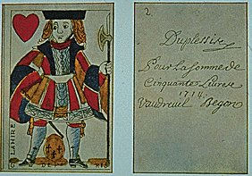
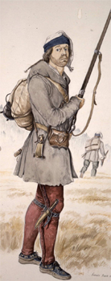
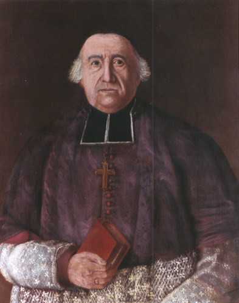

|
From 1759 to 1764 the Canadiens lived through a five-year period of great importance because of the unexpected and extraordinary nature of the measures the English applied to the French colony, a period that makes this Military Régime a box of surprises. Despite the British
victory in America, the fighting between France and England is not over
in Europe. Everything is on hold. For nearly five years New France is occupied by
the British army and governed by martial law. THREE SEPARATE COUNTRIES Before the Conquest, Canada was the settled area along the St. Lawrence, with two commercial extensions, one to the east, namely the North Shore, Anticosti Island, the Magdalen Islands and the Gaspé, and the other, to the west, covering the Great Lakes, including Detroit and many trading posts (the pays d'en haut, or upper country). The royal government is in Quebec, represented by a governor, and there are three administrative regions, Quebec, Trois-Rivières and Montréal.. In this framework, more than a century old, a first upheaval occurs in the fall of 1759, when the English army occupies, and so cuts off from the rest of the country, the Quebec region, that is, from the gulf to the Jacques-Cartier River (today the town of Donnacona). The governor, the bishop and the whole administration of the town of Quebec take refuge in Montréal.
Then comes the first big surprise: Canada (the settled St. Lawrence valley) is divided into three separate entities, corresponding to the three old administrative regions of Quebec, Trois-Rivières and Montréal, but this time the division is so strict that these governments are three countries, each under the exclusive authority of its governor, separated from one another by military borders. Three countries, then, with no longer, as before, a national capital uniting the three regions under the same authority: each has its own capital. Three countries, each sovereign with respect to the other two. If you travel from Quebec to Montréal, you show your passport on entering the government of Trois-Rivières, at Sainte-Anne-de-la-Pérade, where there is a military garrison; again at the next border, at Maskinongé, another garrison lets you leave the government of Trois-Rivières and finally enter that of Montréal. The authorities are touchy about this matter of comings and goings. No one may move from one country to another without a passport from the governor, not even church or administrative superiors. CURRENCY Three countries, then, marked off by borders guarded by soldiers. Three countries that, in addition to the same French currency, use an English currency, the pound sterling. To complicate matters, the English pound does not have the same rate everywhere: in Quebec it follows the Halifax rate, whereas in Montréal it follows the New York rate. A Canadien of the Military Régime who goes to Montréal with English money, and the Conquest brought in plenty of it, sees his English pound drop from a value of, say, 24 French livres to 15 livres. In Trois-Rivières both rates are used... The double rate for English coin is not the only monetary complication. French coinage, which remains in circulation, is itself made up of a variety of coins whose value has to be worked out in English pounds. There are coins of leather, of silver, of gold. Not to mention the English guinea, the Spanish piastre, the Portuguese coin... A Canadien's purse is a real headache when it comes time to pay the bills.  TRADE
Profits from trade were no longer limited to investments with no return: lending at interest was no longer condemned as usury. JUSTICE To the Coutume de Paris, which continued to govern the Canadiens' lives in full, were added, on an optional basis, certain rules of the Common Law. For example, the age of majority dropped from 25 to 21, which was an advantage for young people who wanted to depend less long on their parents' authority. The militia captain of each parish was made judge of first instance. Then courts of hearing were set up, each serving a district made up of a number of parishes. So ordinary habitants became judges of their peers, though the latter could always appeal to a higher court. This system at least had the advantage of bringing justice of first instance closer to the people. A REGULAR, VOLUNTARY AND PAID MILITIA  Another surprise of the occupation: voluntary and paid military service. Since the militia was created in 1669, every Canadien aged 16 to 60 had had to serve in wartime; he supplied his own food, weapons and clothing and received no pay. Now, in 1763, during Indigenous uprisings in the Great Lakes, the English authorities wanted to call on the support of the Canadien militia. The conditions they offered were completely new: service was voluntary, and the militiaman would be armed, fed and clothed by the state and would receive pay. These conditions were so out of the ordinary for the Canadiens that they hesitated to enlist, so incredulous were they and so afraid of a trap. The authorities had to confirm that their offer was serious, and ask for the clergy's support, before enlistment got under way.On April 27, 1763, unhappy with the new trade rules introduced by the conquerors and wanting to contain European expansion, the chief of the Odawa, Pontiac, tried to rally the Odawa, the Saulteaux and the Fox against the English. In May 1763 the Indigenous nations organized a series of bloody raids on the trading posts of the interior. At Murray's request, the Catholic clergy was forced to persuade the Canadiens to volunteer. The Indigenous forces were almost completely crushed at Detroit. According to the historian Michel Brunet, "Pontiac's war inaugurated a new form of collaboration between the English conquerors and the church administrators. The latter became obliged to defend the British military expeditions to the population and to play, in a way, the role of real recruiting agents in their service". Communications improved thanks to a regular postal service. Until then official government mail had been carried by officials, and private mail depended on private journeys and the goodwill of people travelling from one place to another. In 1763, completing the network already set up in the Anglo-American colonies, England established an official, regular postal service between Quebec and Montréal. MEASURES Two English measures, the mile and the yard, were added to the French system. In the French system you went straight from the foot to the toise (6 feet), so the yard (3 feet) was useful, as was the mile, which became an intermediate measure between the arpent and the league. THE PRESS
It was the first newspaper published in Canada. There had been no printing press in the French colony.
RELIGION The English military authorities agree to allow the Canadiens free exercise of the Catholic religion. The only problem is that, since Bishop Pontbriand died in 1760, the see remains vacant and no one has the authority to appoint a successor. Religious authority rests solely with the vicar general of each of the three governments, none of whom is in practice subordinate to either of the other two. They cannot coordinate their actions. Meanwhile the military authorities are pressing, and questions arise. For example, may people be asked to pray for the King of England, that heretic? May priests bless a marriage between a Catholic and a Protestant?... Isolated in his "country", each vicar general has to find the answer. The military authorities agree to replace the bishop, but normally it is the King of France who chooses him, and the Pope confirms the choice with a bull. But now that the King of France no longer has any authority over the colony, how could the King of England, regarded as a heretic, play that role? All the more so since he regards the Pope as an enemy. A terrible dilemma. Every
problem has a solution. It is decided to revive an
old tradition once practised in some European dioceses:
the election of the bishop by the canons.  In September 1764 the canons meet again at the Hôpital-Général in Quebec. This time they choose as bishop the vicar general of Quebec, Jean-Olivier Briand, a shy, self-effacing but frank and level-headed man, a Breton with no personal fortune, a man Murray had several times found easy to handle. Briand then obtains recognition from Rome, the Pope finally accepting him as a "presented bishop". He goes to France to be consecrated bishop on March 16, 1766. Mgr Briand inherits a diocese full of problems: churches in disrepair, impoverished communities, shortages of priests. What is more, the clergy has lost some of its authority over the population. The problem becomes critical when, in 1775, the rebellious Americans invade Canada to win the inhabitants over to their cause. Briand then issues a pastoral letter urging the population to resist the insurgents and support the British, whose government had, in his view, been better for the Canadiens than the French régime. Although the population in general does not side with the Bostonnais (the Americans), Mgr Briand still earns the resentment of some for his support of the English régime. STATUS QUO IN MANY AREAS During these five years of martial law England let the French Régime carry on more or less as it was. The ownership of the movable and immovable property of habitants and seigneurs is guaranteed. Despite the division into three separate governments, nothing is changed in the boundaries of the seigneuries. Nothing changes in the parish system: the boundaries are the same, the curé remains the religious head, and the civil and military head is still the militia captain, responsible as before for passing on the government's military and civil demands to his men. French civil law continues to apply. Notaires carry on their work as before. French coinage and measures remain in use. The great fur trade in the "pays d'en haut" carries on with the usual use of hired engagés, but now without the hindrance of monopolies and permits. The language of administration is still French. Governors and senior officers are bilingual, able to communicate directly in French with the Canadiens.
The country is recovering from the war; famine still strikes, inflation reigns, the goods needed to revive trade are lacking, and there is deep uncertainty about whether France will redeem the card money. Many things are in short supply, but everywhere life goes on. The occupation troops, cut to a minimum after the capitulation of Montréal, and the inhabitants are conciliatory toward one another. Apart from a few inevitable clashes between former enemies, the governors are convinced the people are satisfied with the new government, and the reports sent to London say so. The clergy too is conciliatory; in 1761 people are asked to pray in church for the marriage of King George III to Princess Charlotte, then for the birth of the Prince of Wales. This attitude of the senior clergy during the military régime sets a dangerous precedent for its freedom, but perhaps it is the price to pay to survive. Until 1768 the English use the chapel of the Hôtel-Dieu of Montréal for their services, and do favours for the sisters in return. Murray orders a collection among the English officers and soldiers to help the poor of Quebec. On the economic side, the port of Quebec has to stop trading with the West Indies, since that now falls to the provinces farther south. The Canadien population has to fall back on domestic trade and food production. The French nobility, administrators and officers, and the big merchants almost all leave New France. They sell their land or their seigneuries to English officers. Few Canadiens leave. English merchants take their place and demand rights that would lead to the first clashes of the next régime, the British régime. |

 Whereas
under the French régime freedom of trade had been very
limited, the victors granted the inhabitants and merchants
"all the privileges of trade, with the same favours and conditions
granted to the subjects of His Britannic Majesty, both in the pays d'en-haut
and in the interior of the colony". Later regulations
would nonetheless limit this freedom. So the Military
Régime abolished the monopolies that reserved trade
to one individual or group. Trade became
open to anyone able to engage in it. It was
general freedom for entrepreneurs.
Whereas
under the French régime freedom of trade had been very
limited, the victors granted the inhabitants and merchants
"all the privileges of trade, with the same favours and conditions
granted to the subjects of His Britannic Majesty, both in the pays d'en-haut
and in the interior of the colony". Later regulations
would nonetheless limit this freedom. So the Military
Régime abolished the monopolies that reserved trade
to one individual or group. Trade became
open to anyone able to engage in it. It was
general freedom for entrepreneurs. On June 21, 1764,
William Brown and
Thomas
Gilmore published the first issue of the Quebec
Gazette / Gazete de Québec, a bilingual newspaper.
On June 21, 1764,
William Brown and
Thomas
Gilmore published the first issue of the Quebec
Gazette / Gazete de Québec, a bilingual newspaper.  On Friday, August 10, 1764, at eleven in the morning, on the Place
d'Armes in Quebec, before the
troops under arms and a large crowd, the letters
patent appointing James Murray governor-in-chief of the "Province of
Quebec" are read. This marks the end of what
is known as the "Military Régime", a régime that was, all
things considered, fairly favourable to the Canadien.
On Friday, August 10, 1764, at eleven in the morning, on the Place
d'Armes in Quebec, before the
troops under arms and a large crowd, the letters
patent appointing James Murray governor-in-chief of the "Province of
Quebec" are read. This marks the end of what
is known as the "Military Régime", a régime that was, all
things considered, fairly favourable to the Canadien.